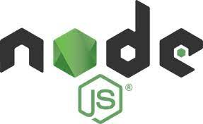
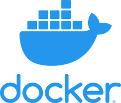
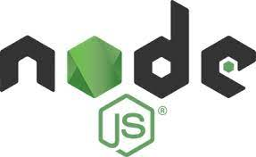
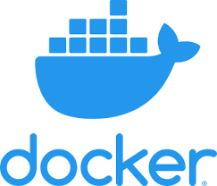

Below,
you can find some of my projects from Github.
And don't forget to add me on Linked-In !

It's Murat. You're in the right place to learn about my software projects and experiences.
I am a passionate technology enthusiast with a keen interest in artificial intelligence and machine learning. My journey in tech has been driven by a curiosity to explore and understand complex systems, which naturally led me to delve into AI and its vast potential to transform industries.
Recently, I have embraced Ubuntu as my operating system of choice, drawn by its flexibility and open-source nature. This shift has sparked my enthusiasm for Linux-based environments, where I am actively expanding my knowledge and skills. I enjoy the hands-on experience of working with Linux, and I am committed to mastering its intricacies as I continue to explore the intersection of AI and open-source technology.
Through my continuous learning and experimentation, I aim to contribute meaningfully to projects that leverage AI and machine learning to solve real-world problems. My goal is to grow as a developer and thinker in this exciting field, always pushing the boundaries of what is possible with technology.
I invite you to explore the content below.
Developed data search and analysis projects using Elasticsearch and Kibana.
Enhanced the performance of search engines by applying optimization techniques to large datasets.
Automated data management processes by developing applications in C# and Python.
Integrated projects into version control systems using tools such as Git and Docker, and improved efficiency through containerization technologies.
Worked on real-world projects by automating data collection processes using web scraping techniques.
- 🔭 I'm currently working on Website for Personal Purposes
- 🤝 I'm looking for help with ideas to make a addon out of this for PoE -> web_UI_for_PoE_api
- 🤝 Also looking for help to find a free and reliable hosting service to make it public ↑.
- 🌱 I'm currently learning Pyhton, Tensorflow and Linux
Connect with me:
» Linked-in : murat-eker
» Git hub : muriarty1893
» 📫 ekerinfo@gmail.com
» 🗂️ Stack Overflow Username : user:27418087
» 📫 murateker9166@gmail.com
 





This certificate demonstrates participation in Akbank's Machine Learning Bootcamp. Throughout the bootcamp, participants worked on projects involving machine learning algorithms, data processing techniques, and Python libraries.
This certificate is awarded for completing a course on using Python and TensorFlow for data science. It covers topics such as data processing, model training, and developing deep learning projects using TensorFlow.
This certificate acknowledges participation in a foundational course for university students on data science. It covers key concepts such as data manipulation, analysis, and an introduction to machine learning techniques.

This project indexes data into Elasticsearch. It allows for fuzzy searching of the indexed products.
>>repo link<<
some practice to make use of poe-api-manager library
npm package repo : https://github.com/ayberkgezer/poe-api-manager
looking for ideas to make an addon out of this
>>repo link<<
This project scrapes the best-selling gaming mouse from Trendyol and indexes the data into Elasticsearch. It allows for fuzzy searching of the indexed products.
>>repo link<<
some practice to make use of poe-api-manager library
npm package repo : https://github.com/ayberkgezer/poe-api-manager
looking for ideas to make an addon out of this
>>repo link<<
This project scrapes the best-selling gaming mouse from Trendyol and indexes the data into Elasticsearch. It allows for fuzzy searching of the indexed products.
>>repo link<<
some practice to make use of poe-api-manager library
npm package repo : https://github.com/ayberkgezer/poe-api-manager
looking for ideas to make an addon out of this
>>repo link<<